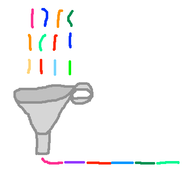
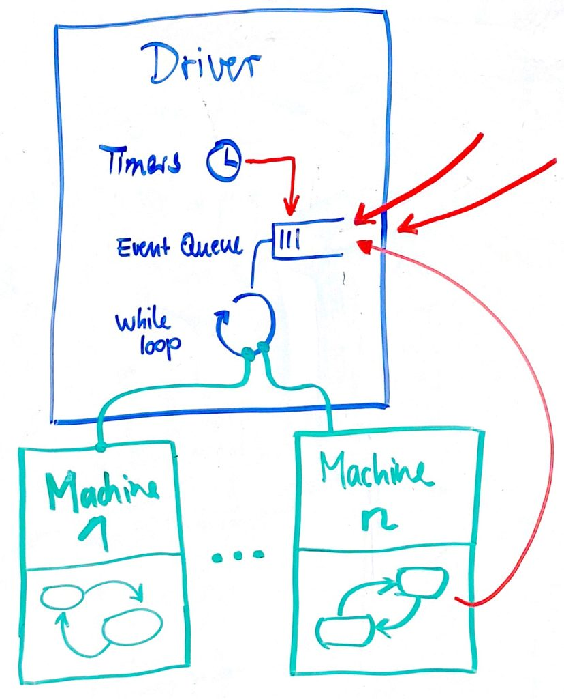

In this unit, you will learn how to implement state machines in Python. Achieving this is valuable for several reasons:
You will be able to deepen your understanding about state machines in general.
You will be able to solve arbitrarily complex synchronization tasks in Python.
You will have a framework for the implementation during the semester project.
For the Semester Project
To have your code in sync with your state machine diagrams and handle concurrency in an effective way, you will program parts of your semester project using STMPY.
Benefits of State Machines in Code
State machines are useful also at the code level when there is a lot of concurrency going on, and a component needs to order a set of events that can come more or less in any order. You may think that there is support for threads in most programming languages, and that this is enough to handle concurrency. However, sometimes also this support is very specific to certain problems and not simple to learn. For example, when learning Java, which has extensive support for concurrency, the concurrency part is considered the most difficult one, and most developers have to look into a book when doing more elaborate tasks. Python has even less mature support for concurrency and synchronization, and also this is hard to get right. Just look at this:
Many programmers cannot even handle very simple threading problems correctly.
A programmer had a problem. He thought to himself, “I know, I'll solve it with threads!”. has Now problems. two he
With state machines, we have a simple model that scales nicely with various challenges in concurrency. This does not make concurrency problems vanish, but you have a good tool to solve challenges. State machines are easy to debug, since you can check in which current state they are, and because you can look at a trace of events that explains how they got there.
It turns out, that state machines are also relatively easy to implement, and we can run many different state machines within the same thread. This means we can do a lot of concurrent things in just own thread, and just one busy while loop, which can make our programs quite efficient.
But how can a state machine do it? With state machines, we have a notation that motivates us to define behavior in short pieces, which are the transitions. Think of them as short little pieces of thread, as illustrated in the figure below. Threads of different color belong to different tasks. But because these tasks are executed concurrently, the state machine sorts them and executes one of them at a time. The states in between are just the ordering criteria between them. (If this analogy is not entirely clear to you now, don’t worry. You will understand more once we implement state machines.)

What you also gain immediately is the ability for parallel computing. State machines can be grouped and execute on a single process or thread, then occupying different CPUs. This is very helpful when we have a lot of tasks that also take some time, to utilize all computing resources we may have.
From Diagram to Code
There are many different possibilities when we want to come from a diagram to code. For this course, we have selected the following strategy:
We define a Python package called STMPY that supports the creation of state machines.
STMPY provides the classes Machine and Driver, which execute state machine behavior.
States and transitions are defined using Python dicts together with code.
The dicts for state and transitions correspond to diagrams and are easy to create but need manual work.
STMPY state machines can be combined with other Python code. Actions called from the state machine can execute other Python code, and Python programs can send messages into STMPY, so that they are received by state machines as triggers.
Despite the manual step with writing the code, our solution still has good traceability. This means it is be relatively easy to see how model (the state machine) and the code (in Python) correspond to each other. We can trace back the code from the model, and vice-versa, look at the code and trace back where in the model it is specified.
Alternatives would be to generate code automatically from diagrams, but this requires a good state machine editor and very formal syntax for it. Yet another possibility would be to feed the state machine diagram directly to an interpreter that then executes it. But again, this would require a very detailed syntax for actions in the state machine. Instead, with STMPY, we have the flexibility to write state machines how we want, and then use all of Python, just with a little manual effort to code the state machines as Python data structures (dicts) and some extra glue code.
State Machine Execution
As a first overview, have a look at the following whiteboard sketch:

A state machine diagram is implemented by an instance of Python class Machine (in green). It takes care of the sequence in which transitions are executed, which states there are, and which Python methods are called by the actions in the state machine.
A driver (in blue) is executing several machines. One driver keeps track of several machines. It has one event queue that collects all the events (signals and timer expirations) for its state machines.
One driver also has a single while loop, running in a single thread or process. From this while loop, a driver executes all the state machines assigned to it, one at a time.
A driver also manages all timers for all of its state machines.
The red arrow shows that events for the queue come from expires timers, signals sent by other state machines, and signals that are sent by components out of the control of the driver.
The separation of driver and machine gives us more flexibility. Since one driver corresponds to one thread or process, we can decide which state machines should run in the same thread. Giving each state machine their own thread can be too costly since we may want to have many state machines but assigning all state machines to the same thread or process is also not good for larger systems. Therefore, we can decide on the mapping between driver and machine more flexibly.
We will go through machines and drivers and their Python API in the following notebooks.
Jupyter Notebooks Introducing STMPY
To introduce STMPY you step by step and while executing code, we created a series of Python notebooks. You have two possibilities to run them
Alternative 1: Install Notebooks on Your Computer
In this solution, you run Jupyter on your own computer.
Binder runs notebooks online. Use this method if you have troubles running the notebooks on your own computer.
Run the Notebooks
The following notebooks will introduce you to STMPY step by step. At this time, you don’t have to program anything on your own, just execute the cells and observe what’s happening. So make sure you are not rushing through the cells too fast.
State Machines in Python - Part 1
Open the first notebook, stored in the file State Machines in Python - Part 1.ipynb
In this notebook you learn all the basics of state machines in STMPY.
State Machines in Python - Part 2
Work through the content of the notebook State Machines in Python - Part 2.ipynb
You learn how we build very simple user interfaces in notebooks. We also use signals to send data from the user interface into the state machine.
State Machines in Python - Part 3
Work through the content of the notebook State Machines in Python - Part 3.ipynb
You learn how you can also create states that have entry and exit actions.
State Machines in Python - Part 4
Work through the content of the notebook State Machines in Python - Part 4.ipynb
You learn how to support decisions in state machines using compound transitions.